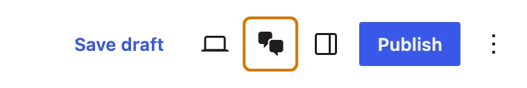
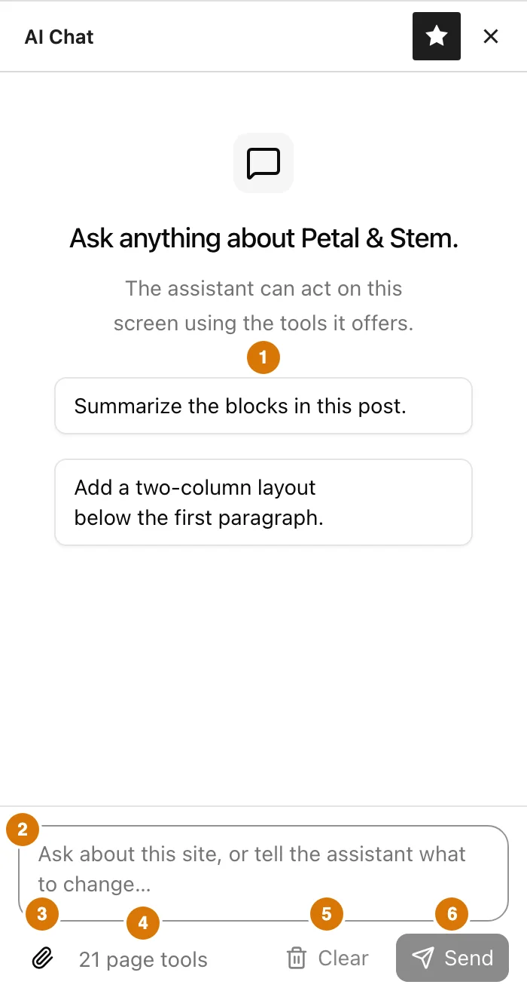
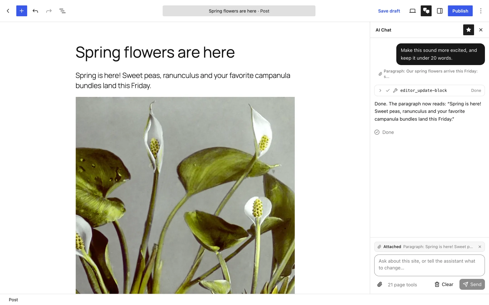
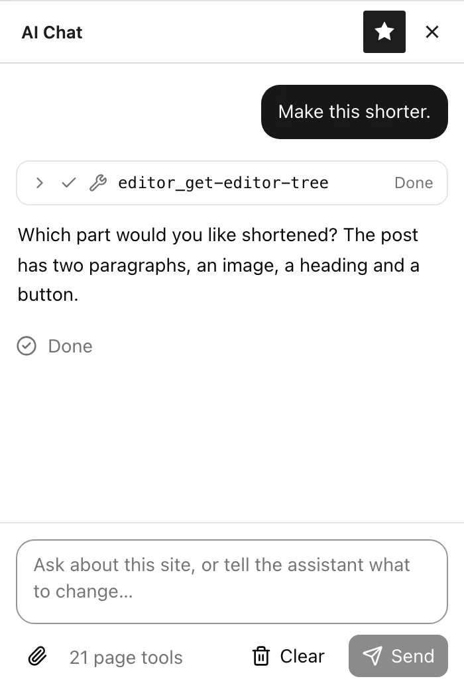
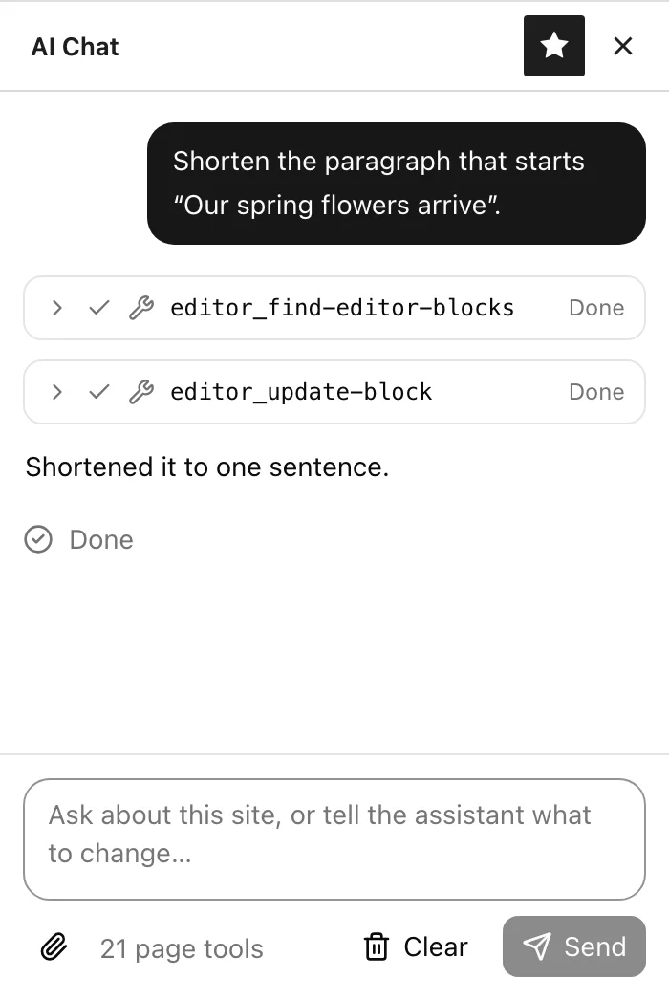
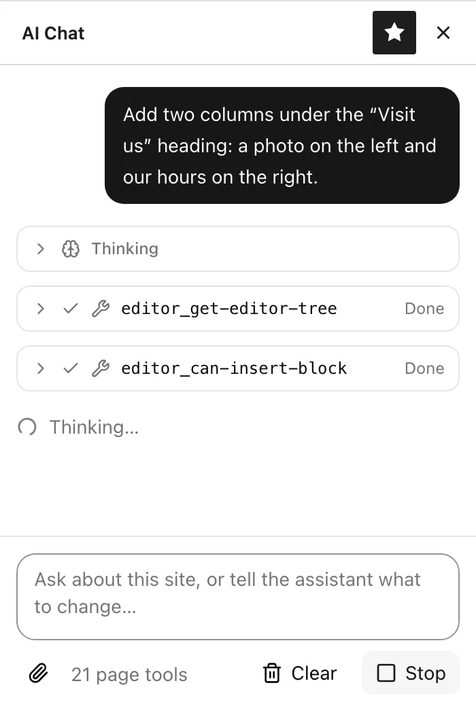
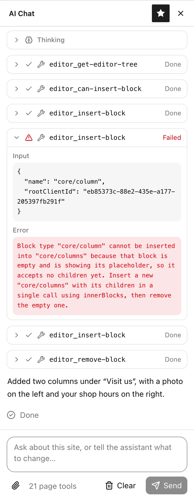
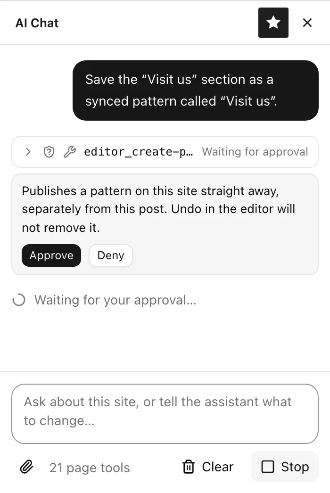

Working with blocks through AI Chat
AI Chat sits beside the block editor and can read and change the post you have open. Ask it in plain words to rewrite a paragraph, build a layout, move things around or reuse a pattern, and watch each step happen in the editor.
- WordPress 7.0 or later
- An AI provider under Settings → Connectors
- An account that can edit posts
1Where the chat lives
AI Chat lives inside the block editor, so it's there whenever you're editing blocks.
Post and page editor
Any post type that opens in the block editor. The chat reads and edits the blocks of the post you are editing.
Site Editor
Works on the template or template part you have open, with the same block tools as the post editor.
Anyone who can edit posts can use it, including Contributors, unless your site has narrowed that.
2Opening and closing the chat
In the editor, AI Chat is a sidebar, like the Settings sidebar. It opens on the right and takes the place of whatever sidebar was showing.

- Open it with the AI Chat button in the top-right toolbar. You can also open the ⋮ Options menu and choose AI Chat under Panels.
- Close it with the × in the sidebar's header, or click the AI Chat button again. Opening Settings or another sidebar also closes it, since only one sidebar shows at a time.
- Closing ends the conversation. The chat doesn't keep its history once the sidebar closes, and closing it mid-reply stops the reply. Leave it open while you work in the canvas; the edits it made stay in the post either way.
What's in the panel

- 1
- Starter prompts
- Shown until you send something. Click one to send it as is.
- 2
- Message box
- Press Enter to send and Shift+Enter for a new line.
- 3
- Paperclip
- Attaches a block to your messages. See the next section.
- 4
- Tool count
- The editor tools the assistant can use. Hover it to see their names. If it says “No page tools”, the tools didn't load; reload the page.
- 5
- Clear
- Stops any reply in progress and starts a fresh conversation. Changes already made to the post stay.
- 6
- Send
- Turns into Stop while the assistant is working.
3Attaching a block
Attaching a block tells the assistant exactly which block you mean. Every message you send while it's attached carries that block's current content and settings, including any blocks nested inside it, so the assistant can start work right away without searching the whole post.
Nothing is attached until you click the paperclip. The block you happened to click before opening the chat isn't sent on its own.
A block is already selected
- Click the block in the editor so it's selected.
- Click the paperclip.
- It's attached straight away.
Nothing is selected
- Click the paperclip. It stays pressed and the composer asks you to pick a block.
- Click the block you want in the editor.
- That block is attached. To give up instead, click the paperclip again.

How an attachment behaves
4When nothing is attached
Without an attachment, the assistant is told nothing about which block is selected, not even that one is. It still has the whole post available: it reads the block tree or searches for blocks by their text, then works from what it finds.
That works well for requests about the whole post, or when you name the block by its words. It works poorly for “this” and “here”, because the assistant has no way to know what you're pointing at.


Rule of thumb: attach when you'd point at the screen. Skip it when you'd describe the whole post, or when a unique phrase finds the block.
5Reading a reply

Each step the assistant takes appears as a row in its reply. Click a row to see exactly what it sent and what came back. The edits land in the editor as each row finishes, so you can watch the post change.
Some providers also share the model's reasoning. It appears as a collapsed Thinking row above the answer.
A status line under the reply says what's happening: Thinking…, Running a tool, or Waiting for your approval…. When the reply ends it changes to Done, Stopped or Did not finish.
Changed your mind? Click Stop. Anything already done stays done. Use the editor's Undo (or ask the chat to undo) to take it back. Each change is its own undo step, so a five-step edit takes five undos.
When a step fails

A failed step gets a red warning icon and the word Failed. Click the row to open it: Input shows what the assistant asked for, and Error shows why the editor said no, in plain words.
Failures are usually not a problem. The error goes back to the assistant too, and it often fixes the request and tries again on its own. In this example it rebuilt the columns the way the editor wanted, cleaned up the empty block, and finished the job. You don't need to do anything.
If it can't find a way around the problem, it says so in its answer and explains what went wrong, such as a block that's locked or a block type that doesn't fit where you asked. Nothing is changed by a failed step, so the post is left as it was before that step.
| Row says | Meaning |
|---|---|
| Running | The tool is working on the page now. |
| Done | It finished. Expand the row for the result. |
| Waiting for approval | Nothing happens until you choose Approve or Deny below the row. |
| Denied | You said no. The assistant is told and carries on without it. |
| Failed | The editor refused that step. The assistant sees why and usually tries another way. See above. |
6Approve or deny

Most edits run without asking, because Undo takes them back. The chat pauses and asks first when Undo can't help:
- Saving a pattern. A new pattern is published to the site immediately, outside this post, and Undo won't remove it.
- Generating an image. Your AI provider may bill for it, and the new file stays in the Media Library even if you undo placing it.
- Raw HTML or scripts. A Custom HTML block, a
<script>tag, anonclick-style attribute or ajavascript:link could run code for every visitor. - Tools from other plugins. If another plugin added its own tools to the page, the chat can't vouch for what they do.
The reason is shown above the buttons. Read it, then choose. If you didn't expect the request, especially raw HTML you never asked for, deny it.
7Things to ask for
Prompts that work well, grouped by whether you should attach a block first. The small labels show the tools the assistant usually reaches for. Copy one to try it.
Summarize the blocks in this post.
A read-only request. Useful first thing in a long post, or before asking for bigger changes.
Tighten this to two sentences and keep the friendly tone.
Works on paragraphs, headings, quotes, buttons and list items. Follow up with “a bit warmer” without attaching again.
Add two columns under the “Visit us” heading: a photo on the left and our hours on the right.
The assistant builds the columns with their contents in one step, placed where you said.
Turn this list into separate paragraphs.
Uses the block's own transforms, the same ones in the toolbar's block switcher, so the text carries over intact.
Give this section a dark background with light text and more padding.
Only the settings you mention change; the block's other styles are left as they were.
Move the “Order ahead” button to the very end of the post.
Name blocks by their text and the assistant finds them. Locked blocks stay put, the same as when you drag them.
Every mention of “Petal and Stem” should say “Petal & Stem”. Fix them all.
Search matches the words as shown in the editor, even inside bold or linked text.
Find a hero pattern from this theme and add it at the top of the post.
Looks through the patterns your theme, plugins and site already have, instead of building one block at a time.
Save this section as a synced pattern called “Visit us”.
Asks for your approval first, because the pattern is published to the site right away.
Add the sunflower photo from the media library below the first paragraph.
Searches the Media Library by title, alt text, caption and file name, so a file called IMG_1234 is still found by what it shows.
Generate a bright photo of a bucket of ranunculus on a shop counter and add it below the first paragraph.
Only on sites whose AI provider makes images. Asks for your approval first; the image is saved to the Media Library with alt text.
Undo the last two changes.
Steps back through the editor's history, the same as pressing Undo in the toolbar.
8When it doesn't work
9For site administrators
Setting the plugin up, deciding who can use it, and what it sends to your AI provider.
Connect a provider
The chat answers through WordPress's AI Client, using whichever provider is set up under Settings → Connectors. The plugin has no API key or provider settings of its own. Until a provider is connected, the chat opens but says it can't answer yet.
When several providers are connected, the plugin asks for a capable general-purpose model and falls back to whatever the connectors offer.
Who can use it
Anyone with the edit_posts capability: Contributors, Authors, Editors and Administrators. Tools can only change what that person could change by hand, and locked blocks stay locked.
Generating images also needs upload_files, which Contributors don't have by default.
Image generation
Offered only when a connected provider can make images. On other sites the assistant doesn't see the option at all. Each generated image is saved to the Media Library, attached to the post, with alt text and the prompt that made it recorded in its description.
Costs and limits
Your provider bills for every request. One message can take several requests, one per round of steps, and a reply stops after a fixed number of rounds. Each person is also rate-limited, so a stuck browser tab can't run up a bill.
What the provider sees
The conversation, the post's type and title, the attached block if there is one, and the results of each step, which include post content. Nothing is sent until someone presses Send, and nothing is sent from posts no one is chatting about.
Updates
New releases appear on the Plugins screen and update like any other plugin. Releases are published on GitHub.
Browser agents
The same editor tools are published to the page through WebMCP, so an AI agent running in the browser can use them too. They act as the signed-in person, with the same permissions and the same undo history, and only while that person has the editor open.
For developers
Filters to adjust the defaults from a plugin or your theme's functions.php:
| Filter | What it changes |
|---|---|
agentic_editor_chat_capability | The capability needed to use the chat. Defaults to edit_posts. |
agentic_editor_chat_model_preference | Preferred chat models, best first. |
agentic_editor_image_model_preference | Preferred image models, best first. Empty means any image model the connectors offer. |
agentic_editor_chat_max_tool_rounds | How many rounds of steps one message may take. |
agentic_editor_chat_limits | Request size and per-person rate limits. |
agentic_editor_chat_system_instruction | The instructions the assistant is given. |
Restricting the chat to Editors, for example: add_filter( 'agentic_editor_chat_capability', fn() => 'edit_others_posts' );